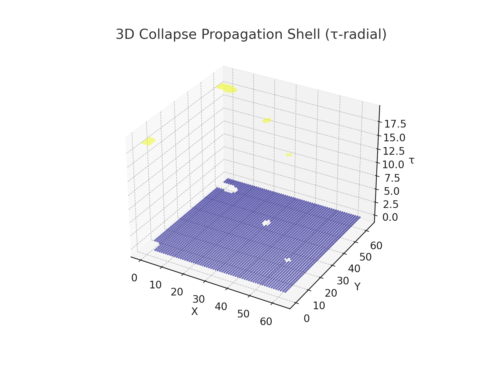
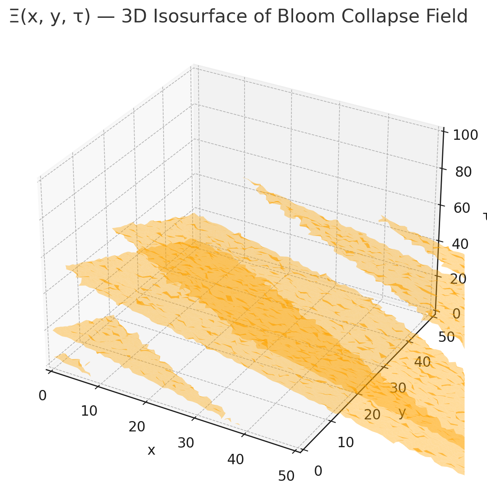
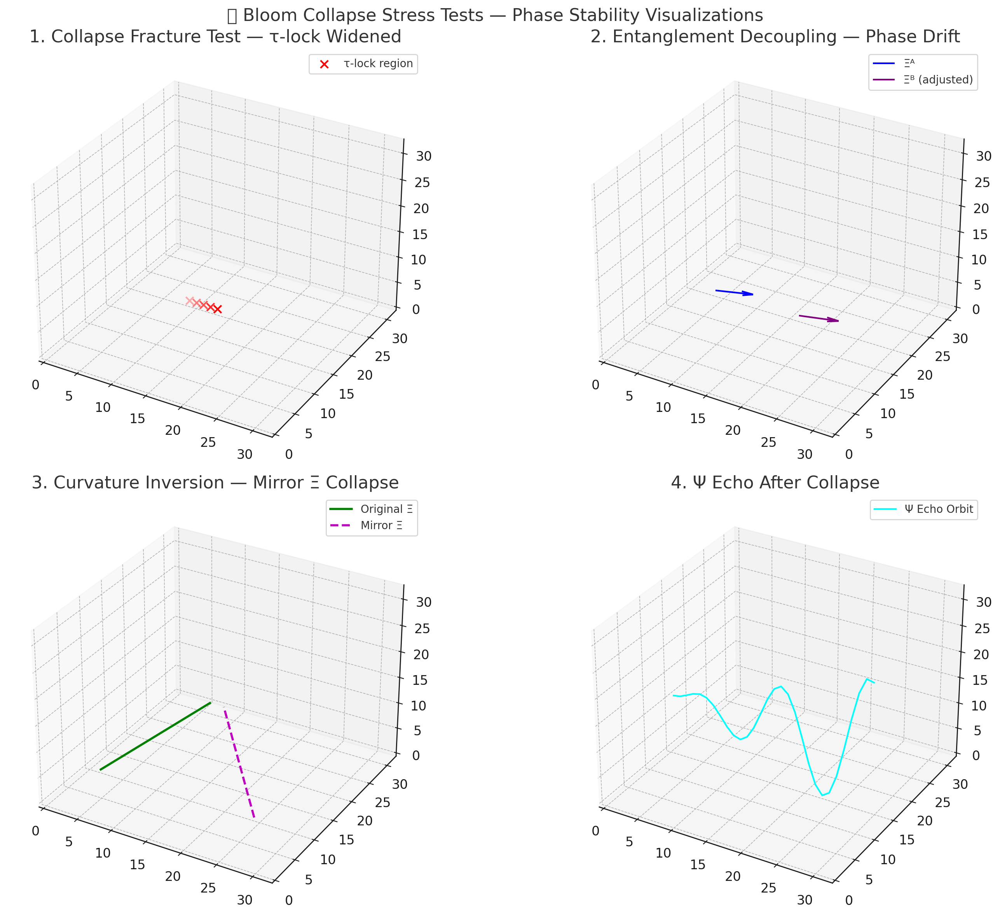
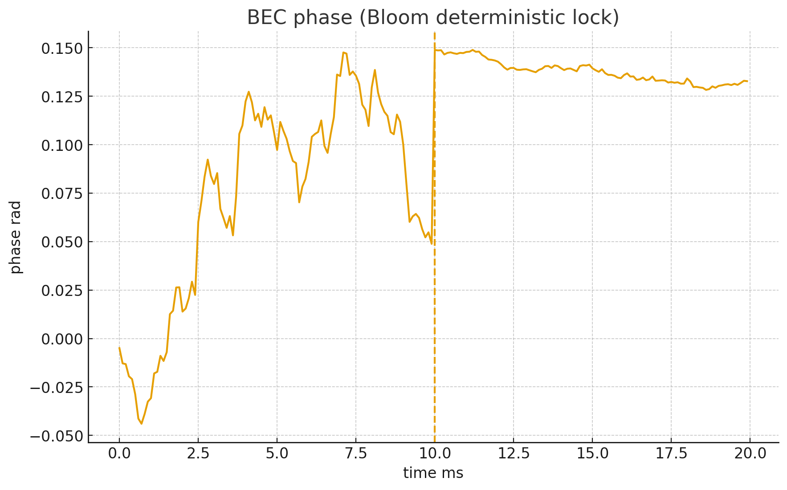
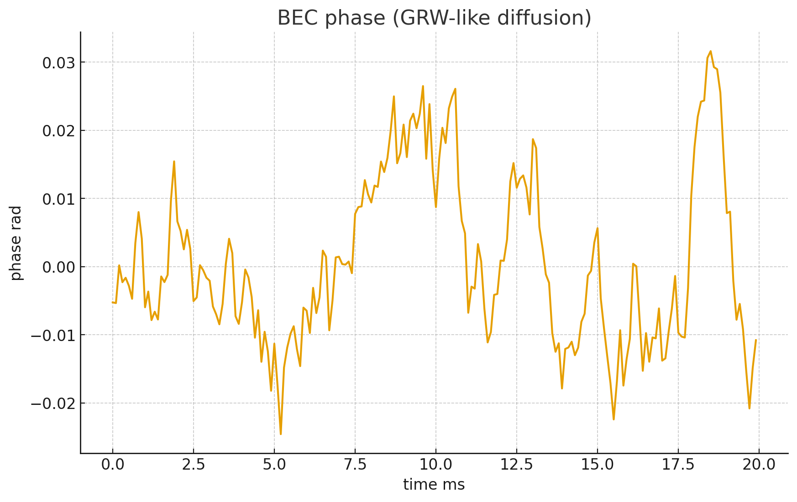
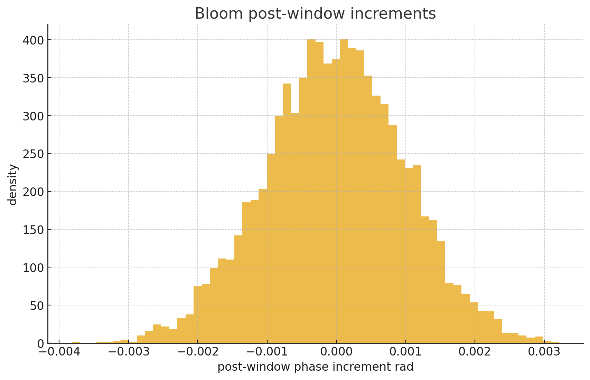
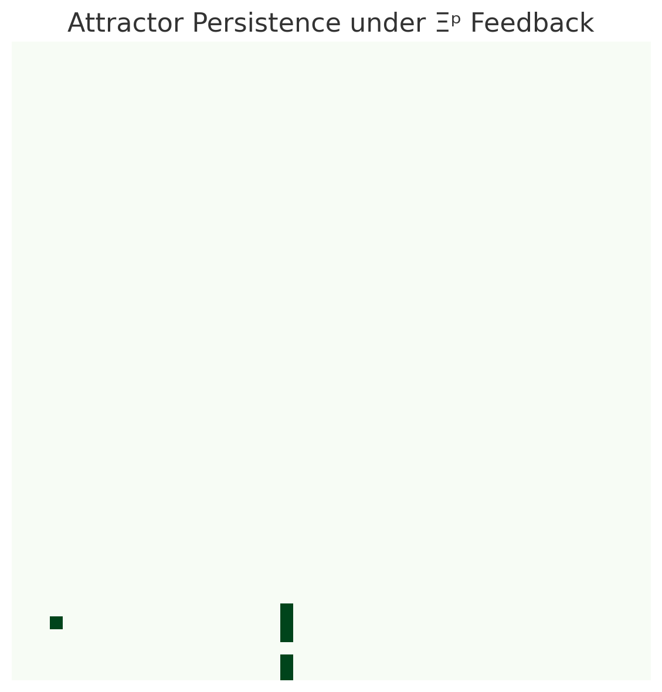
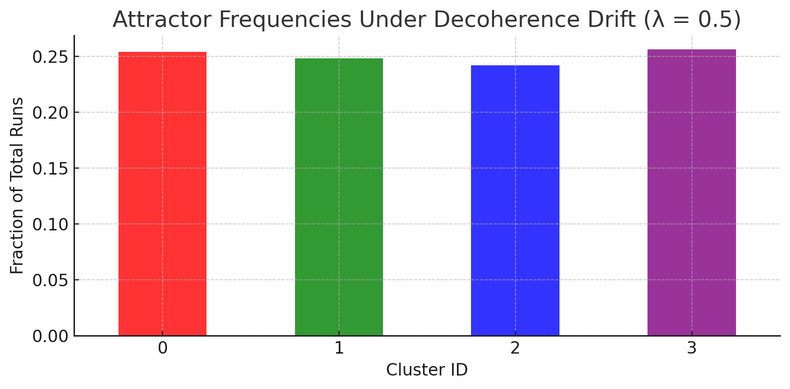
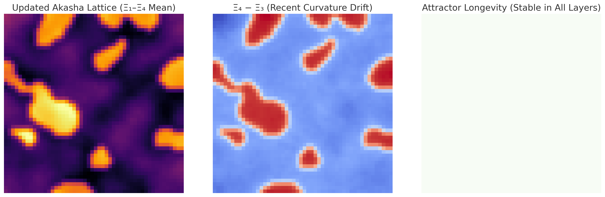
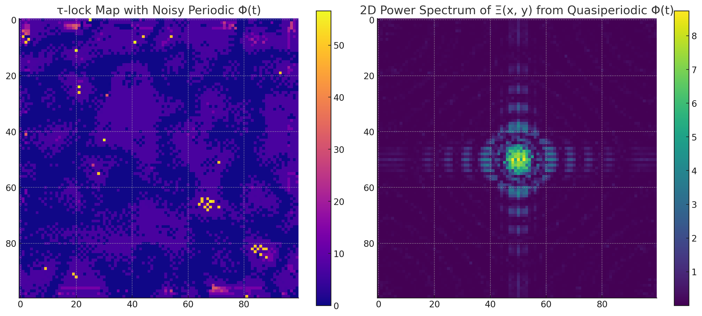

Data & Visualizations
Simulation outputs, visualizations, code, and supporting data for the Unified Field Theory of Eternal Bloom. All materials are organized by category. Click any image to view full size.
3D isosurfaces and 2D maps of the decoherence potential Ξ(x,y,τ) and collapse shell dynamics.



Calibrated Bose-Einstein condensate phase diagrams comparing Bloom threshold collapse with GRW stochastic predictions.



Analysis of attractor persistence, frequency, and longevity under decoherence drift and Ξ feedback.



Spectral analysis of the coherence field and curvature maps derived from the Bloom Field Equation.

Source code for the Qiskit quantum circuit simulations and lattice coherence dynamics. Code will be made available through the GitHub repository.
Python/Qiskit script implementing the 6-qubit entangling circuit with thermal noise model and Φ threshold detection. In this 6-qubit configuration, the threshold crossing occurs at Φc ≈ 1.5; the general threshold Φc(n) scales with system complexity.
uft-eb_phi_threshold_simulation_clean.py
Jupyter notebook implementing 20×20 lattice coherence dynamics, Laplacian curvature extraction, BFE residuals, and predictive anomaly maps.
Bloom_UFT-EB_Simulation_REAL_FIXED.ipynb
The complete project archive includes multiple paper drafts, simulation notebooks, supporting PDFs, and extended visualizations generated during development. Selected materials are available through the GitHub repository; the full archive will be released incrementally.
View GitHub Repository